Foundry-legal grating couplers on 220 nm SOI.
A C-band TE fibre-to-chip grating on a public MPW stack: fill apodization plus an angle-preserving period chirp, checked with Maxwell, against uniform, chirp-only, and fill-only cells. Peak efficiency is not the story. Fabrication tolerance is.
The problem
One device, one public stack. A C-band TE fibre-to-chip grating on 220 nm SOI with a 70 nm shallow etch, oxide cladding, 8° SMF-28, 150 nm minimum CD. The AIM Photonics PDK TE vertical coupler sits near 2.8 dB measured. Bozzola et al. (2015) put the 2-D FDTD ceiling for this platform without a back-reflector at about −1.9 dB (65%). Sub-0.5 dB published devices use a metal mirror, a poly-Si overlay, 340 nm SOI, or topological resonances. Those are different processes.
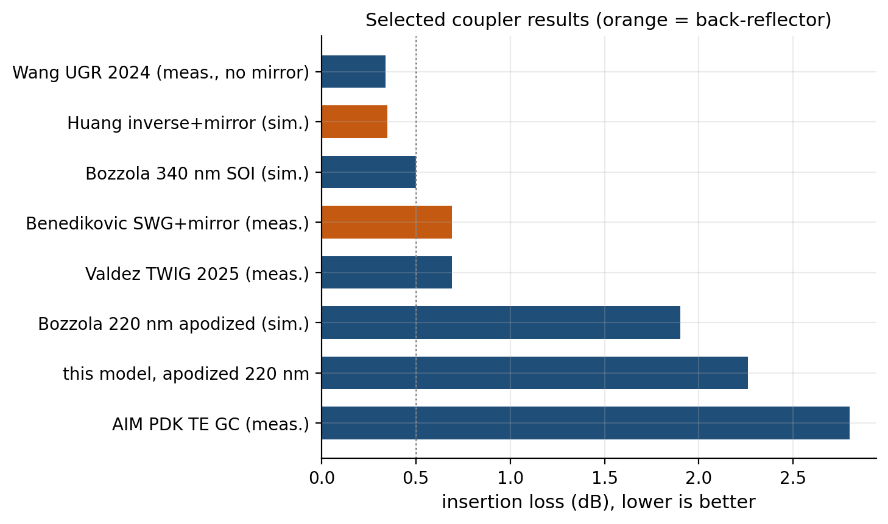
How the numbers are produced
Wavelength on the grid. Insertion loss at 1550 nm is taken from a sample that sits on the wavelength list. numpy.isclose default atol=1e-8 on a metre-valued array also matches 1545 nm (5×10−9 m), so lookup requires a unique hit within 0.01 nm. Every sweep row stores lambda_nm: 1550.0. A cache whose 70 nm etch row disagrees with the on-grid 1550 sample is refused.
No literature clamp on the model. Bozzola’s 65% 2-D FDTD ceiling is a published result, not a min() applied to this leaky-wave model. Yield at 0.5 dB is zero because the uncapped model sits near 2.3 dB and the Maxwell peaks sit near 2.6–2.8 dB.
Independent solver. In-house 2-D Yee FDTD is used for process sweeps. Tidy3D (Flexcompute, 16→8→4 nm, in-coupling Gaussian → waveguide mode) is the ranking check. No fabricated devices and no adjoint loop; those are listed as not done.
Analytic model (ranking tool, not a proof)
Slab modes of the 220 nm and 150 nm sections, Bloch average, phase-match period 622 nm, DRC fill window [0.24, 0.76]. A leaky-wave overlap with SMF-28, calibrated so a uniform grating matches Bozzola’s 53.7% 2-D FDTD point. That calibration is an anchor for the uniform cell, not a ceiling applied to every other design.
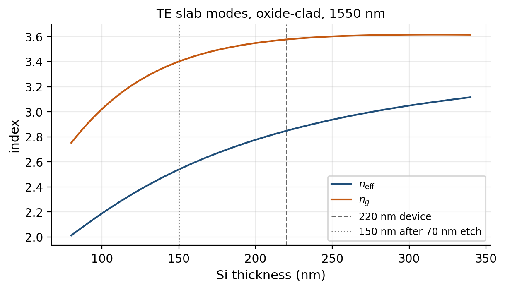
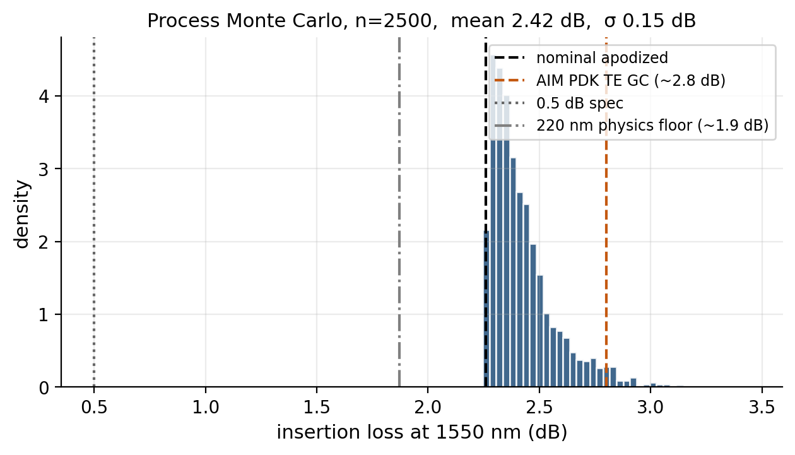
In-house 2-D FDTD
Four layouts, identical constraints: uniform 50%, linear period chirp, Taillaert fill apodization (period fixed), and the proposed fill plus angle-preserving chirp. On-grid 1550.00 nm: uniform 2.63 dB, proposed 2.74 dB, chirp 2.76 dB, Taillaert 2.94 dB. Fill-only is worse at the design wavelength. Combined fill+chirp recovers the 1525 nm shoulder (4.37 vs uniform 5.30 dB). In-house under-etch at 58 nm: proposed 3.52 dB and chirp 3.55 dB versus uniform 3.82 dB — chirp-only tracks proposed on this grid. Aligned Tidy3D agrees: under-etch is the chirp, not a unique fill+chirp result.
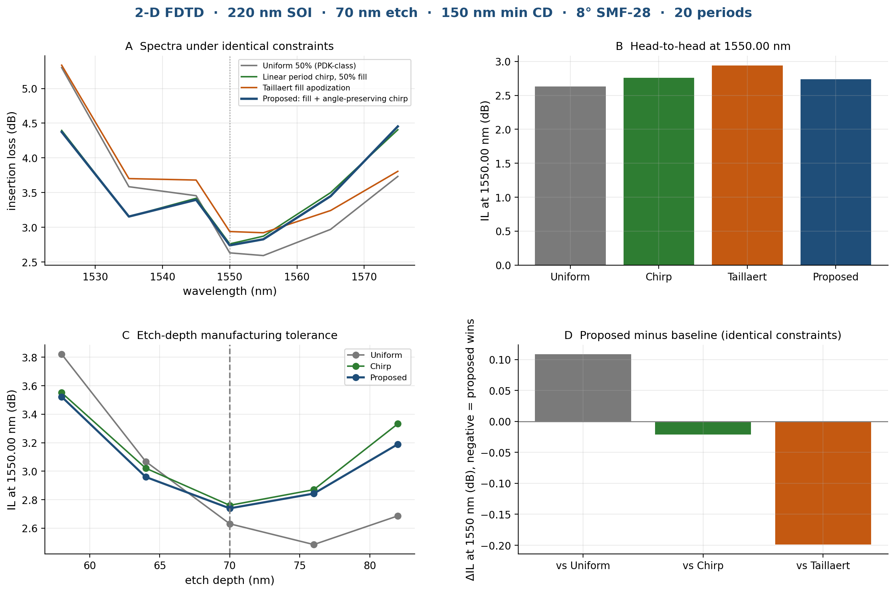
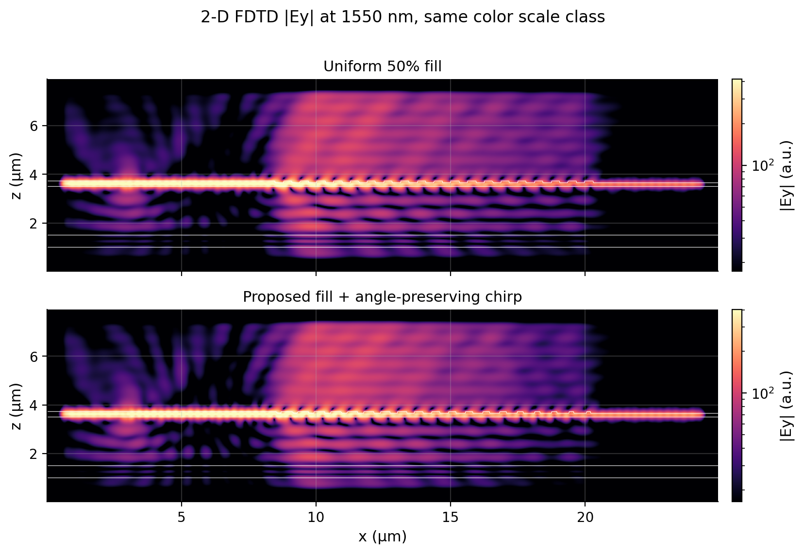
Tidy3D — independent FDTD, finer grid, exact 1550 nm
Flexcompute Tidy3D 2.12, 2-D (y-invariant), subpixel averaging, Gaussian beam in-coupling (SMF-28 waist, 8°, S-pol / Ey) into a waveguide mode monitor. The full-height strip now runs through the −x PML. Fiber x is maximised at 1550.00 nm (−2.0 µm from the grating midpoint for all four layouts) and frozen for etch and the 16→8→4 nm series. Fill-only is on the etch sweep.
Loading Tidy3D results…
| Design | IL at 1550.00 nm | Notes |
|---|---|---|
Waiting for tidy3d_compare.json. | ||
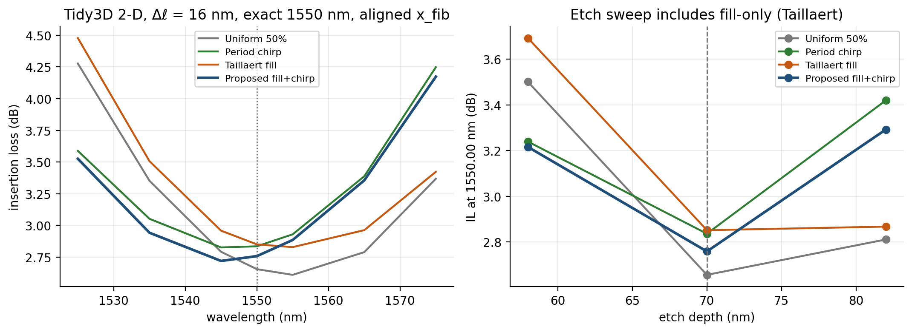
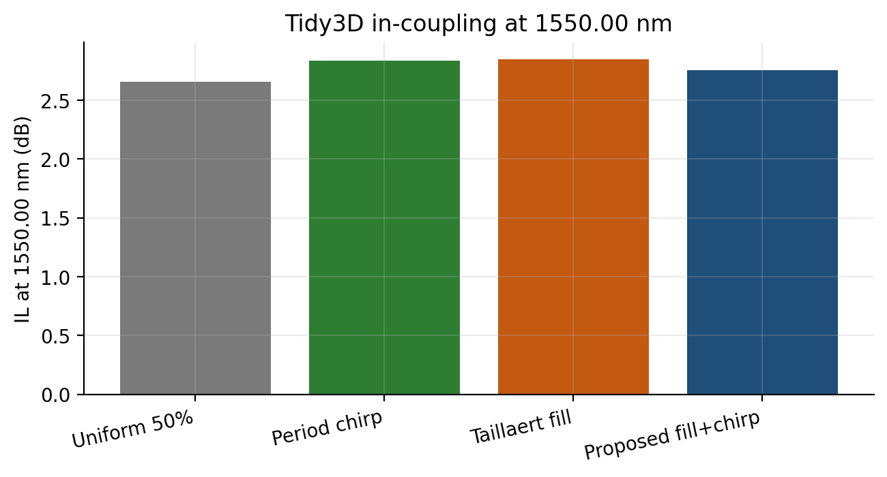
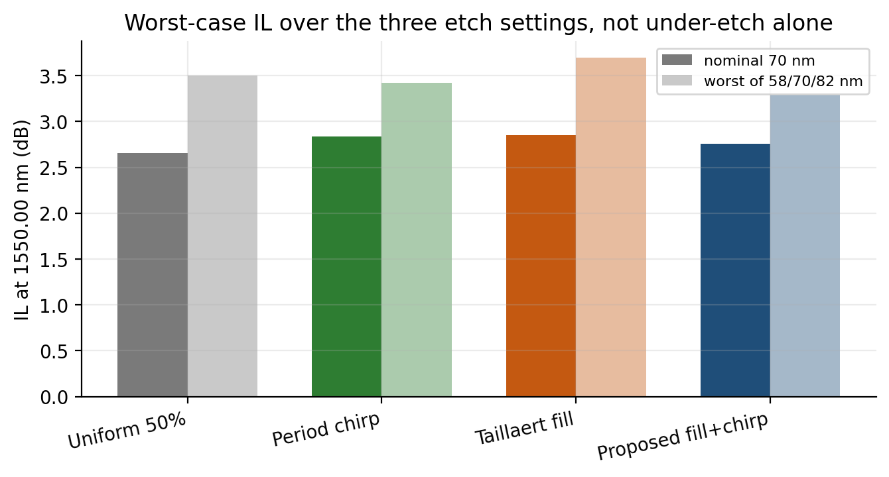
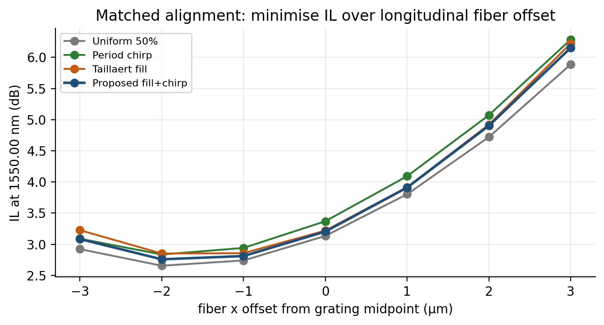
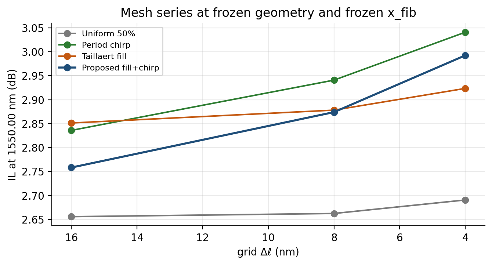
Re-run, aligned, waveguide continued, fill-only on the etch plot. At 16 nm / 1550.00 nm: uniform 2.66 dB, proposed 2.76 dB, chirp 2.84 dB, Taillaert 2.85 dB. Under-etch 58 nm: proposed 3.22 ≈ chirp 3.24, uniform 3.50, Taillaert 3.69 — fill-only is the worst, not a hidden champion. Over-etch 82 nm still favours uniform (2.81 vs proposed 3.29). Mesh: uniform is stable (2.66→2.69 dB from 16 to 4 nm); proposed drifts 2.76→2.99 dB. Do not start adjoint on the 16 nm apodized ranking.
The lead: fabrication tolerance
Partial etch is the first-order process error. With fill-only on the plot, under-etch help is shared by chirp and proposed; Taillaert is the worst 58 nm cell. Over-etch still wants uniform. Worst of {58, 70, 82} nm at 16 nm: proposed 3.29, chirp 3.42, uniform 3.50, Taillaert 3.69. That is a three-point min-max, not a yield, and proposed is still moving under mesh refinement.
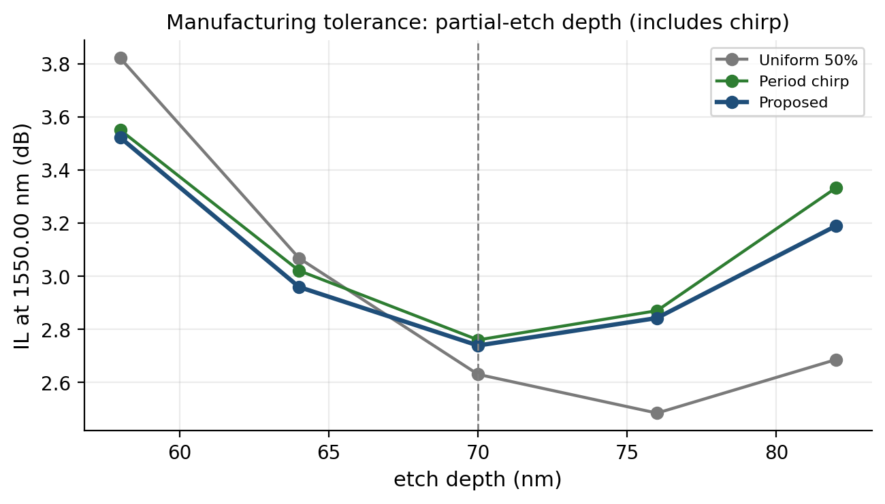
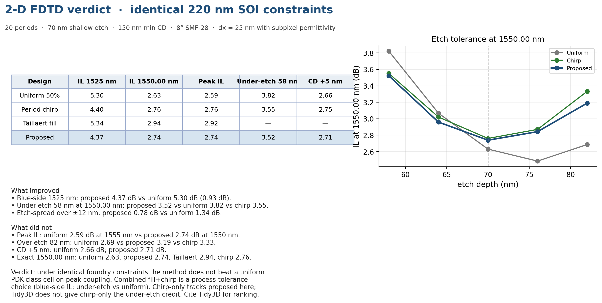
What we claim, and what we do not
Claim
On this stack, 0.5 dB is not available. After fixing the waveguide, aligning the fiber, putting fill-only on the etch sweep, and running 16→8→4 nm: uniform still wins at 1550.00 nm (2.69 dB at 4 nm). Proposed drifts under refinement (2.76→2.99 dB). Fill-only is the worst under-etch cell. Adjoint inverse design is not next.
Do not claim
No fabricated devices. No adjoint inverse-design loop. No 3-D
focusing grating. No 70–90% module-energy cut from the coupler.
Yield at 0.5 dB is zero because the uncapped model and the
published 220 nm ceiling sit near 2 dB — not because a
Python min() copies Bozzola’s 65% into the Monte Carlo.
Reproduce: python analysis/run_study.py,
python analysis/run_em_compare.py --rerun,
python analysis/run_tidy3d_compare.py.
This page: python photonic/gui/app.py.